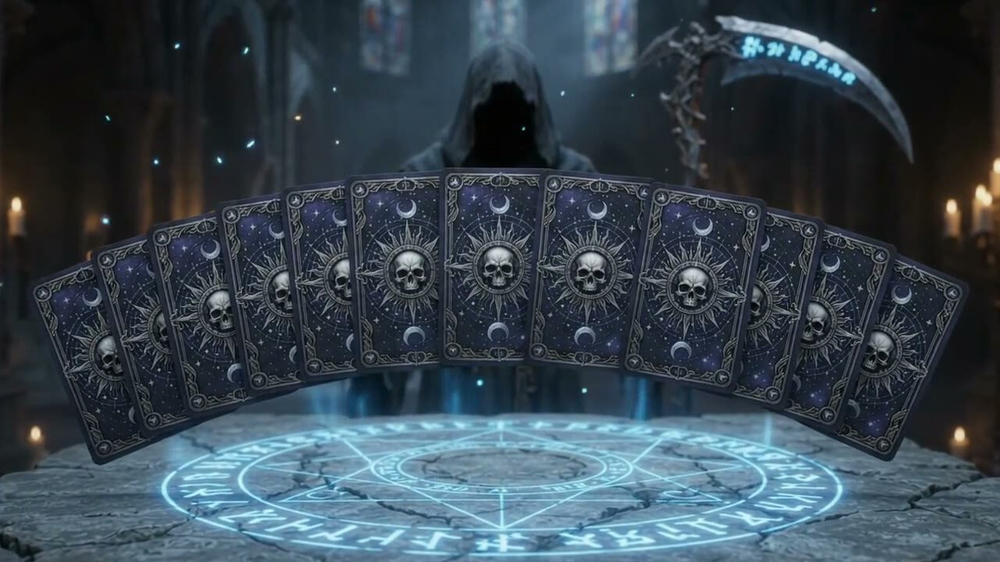
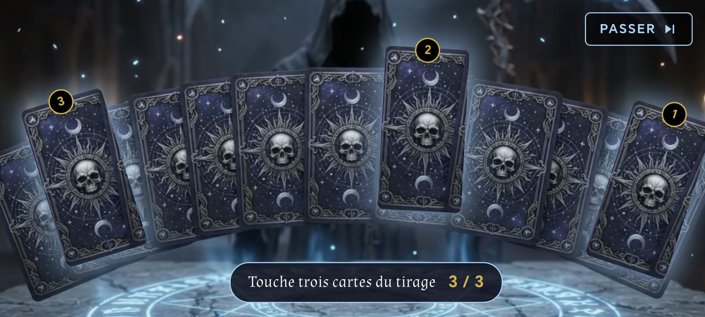

ゴシック・タロット2026では、勝利はスコア表で終わりません。テーブルで最も優れたプレイヤーには、ミステリー機能が待っています。それが死神の占い、ほかの誰も見ることのないタロット占いです。
ここですべてを明かすつもりはありません。サプライズもゲームの一部だからです。体験するチャンスを得るために知っておくべきことだけをお伝えします。
ポイントまとめ
- 勝者だけの特典： 最終合計で1位になったプレイヤーだけが体験できます。
- オンライン限定： 3〜5人のオンライン対戦テーブル、またはトーナメントで獲得できます。
- 負けたときは決して出ません： たとえ1点差でも、2位では足りません。
- あなただけの占い： 死神があなたのためだけにアルカナを読み解きます。
- 無料： ゲームの一部であり、購入や解放が必要なオプションではありません。

死神の占いを解放するには？
条件を言うのは簡単ですが、満たすのはずっと難しいものです：
- オンライン対戦に参加する またはトーナメントに、3人・4人・5人で参加します。AIとのオフライン対戦では占いは出ません。
- 最後までプレイする。 大切なのは全ラウンドの最終合計で、1回のディールの成功ではありません。
- 1位で終える。 スコア表が表示され、あなたがトップなら、死神が姿を現します。
つまり、本物の対戦相手に勝つ必要があります。勝つ確率を高めるために、オンラインに挑む前にタロットの全ルールを復習し、ゲームのAIを相手に練習しましょう。
勝つと何が起こるの？
それは秘密です。ただ、死神はあなたを祝福するだけではありません。自らの領域の扉を開き、時間をかけてタロットのアルカナからあなたの運命を読み解きます。

その瞬間は、ゲームの暗い世界観の中で本格的なゴシック演出として作られています。カードが何を告げるのかを知るのは、あなただけです。
よりパーソナルな占い
プロフィールのタロット占いの項目では、希望すれば、よりパーソナルな占いのためにいくつかの個人情報を入力できます。入力は任意で、情報はスマートフォン内に保存され、インターネットには送信されません。
笑顔で楽しむサプライズ
死神の占いは、ゲームの雰囲気を広げるエンターテインメントです。その予言に実際の根拠はなく、恋愛・お金・健康に関するいかなる助言の代わりにもなりません。
死神の占いに関するよくある質問
AIとひとりで遊んでも死神の占いは出ますか？
いいえ。占いは、3〜5人のオンライン対戦またはトーナメントの勝者だけのものです。オフライン対戦は練習用です。
すべてのラウンドで勝つ必要がありますか？
いいえ。大切なのは対局の最終合計での順位だけです。1位で終える必要があります。
死神の占いは有料ですか？
いいえ。Google Playで配信中のゴシック・タロット2026に含まれています。
プロフィールの情報は共有されますか？
いいえ。タロット占いの項目に入力した任意の情報は、スマートフォン内に保存されます。